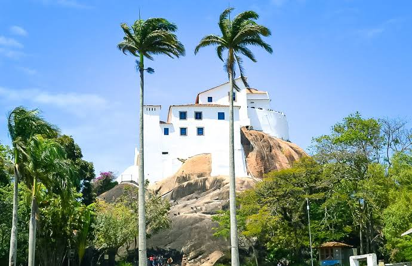

Vila Velha é a cidade mais antiga do Espírito Santo e o berço da história capixaba, iniciada em 1535. De frente para o Oceano Atlântico, o município alia a graça de praias renomadas, como a Praia da Costa e Itapuã, a uma vida urbana pulsante e moderna.

Principal cartão-postal do município, o Convento da Penha destaca-se no alto de uma formação rochosa de 154 metros desde os anos 1500. Muito além de seu valor sagrado e histórico, o mirante descortina um visual deslumbrante de toda a região metropolitana, unindo a imensidão do oceano, o desenho da Terceira Ponte e o equilíbrio marcante entre o verde da paisagem e o crescimento urbano.